한줄 요약 — TNS는 평탄지·토사·물·암석·장비 같은 의미 정보와 굴착기 사양으로 정규화한 경사·단차 점수를 결합하고, 이를 Hybrid A* 비용과 궤적 제어에 직접 연결한 통합 항법 시스템이다. RELLIS-3D 지도 MSE 0.106, 90회 이상 현장 계획 시험의 성공률 82.6%, 50 m 대표 주행의 최대 오차 14 cm를 보고했다.
1.연구 배경 및 동기
승용차 지도를 49톤 굴착기에 그대로 쓸 수 없는 이유
건설현장의 자율 굴착기는 포장도로 차량과 다른 주행 가능성 판단이 필요하다. 같은 경사와 단차라도 차체 질량, 궤도 폭, 등판 한계에 따라 안전 여부가 달라지고, 흙더미·암석 더미·깊은 웅덩이처럼 기하 형상만으로 의미를 확정하기 어려운 대상이 계속 나타난다. 논문은 지면의 형상만 계산하거나 카메라의 의미 분할만 사용하는 방식으로는 이런 장비 의존성과 현장 변화를 동시에 다루기 어렵다고 본다.
TNS는 terrain traversability mapping을 독립적인 인지 결과로 끝내지 않고 전역 지도, Hybrid A* 계획, 차체 제어까지 한 폐루프로 연결한다. 저자들은 7종 현장 지형을 포함한 CWT 데이터셋을 만들고 공개 데이터 RELLIS-3D에서 지도 품질을 비교한 뒤, 49톤급 XCMG XE490D가 구덩이·급경사·암석 더미가 섞인 실제 현장을 통과하도록 했다. 목표는 픽셀 분류 정확도 자체보다 굴착기가 실제로 목적지에 도달할 확률을 높이는 데 있다.
논문의 핵심 문제 설정은 주변을 0에서 1 사이의 traversability score를 갖는 격자로 표현하고, 굴착기 치수와 성능 한계를 반영해 위험 셀을 배제하는 것이다. 이후 계획기는 셀의 점수를 이동 비용에 가중하고, 제어기는 생성된 경로의 방향 오차와 횡방향 오차를 줄인다. 이 구성은 인지 성능, 지도 오차, 계획 성공률, 실차 추종 오차를 같은 시스템 안에서 연결해 평가할 수 있게 한다.
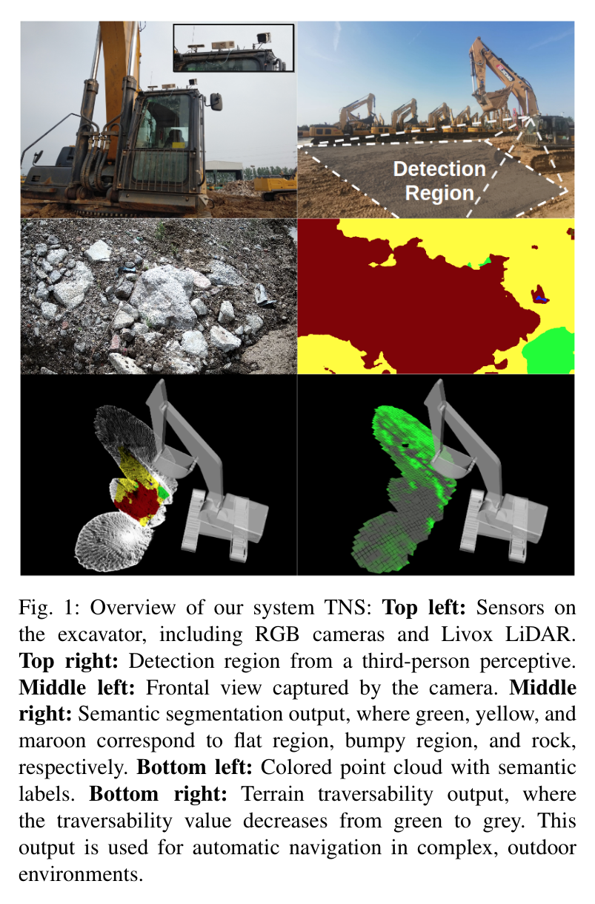
원문 Figure 1 · PDF p.1 — Fig. 1: Overview of our system TNS: Top left: Sensors on the excavator, including RGB cameras and Livox LiDAR. Top right: Detection region from a third-person perceptive. Middle left: Frontal view captured by the camera. Middle right: Semantic segmentation output, where green, yellow, and maroon correspond to flat region, bumpy region, and rock, respectively. Bottom left: Colored point cloud with semantic labels. Bottom right: Terrain traversability output, where the traversability value decreases from green to grey. This output is used for automatic navigation in complex, outdoor environments.
선행 연구의 한계
순수 기하 기반 지도는 물과 평탄한 흙, 암석과 완만한 지면처럼 모양이 유사하지만 주행 위험이 다른 대상을 구분하기 어렵다.
순수 의미 분할은 카메라 시야와 조명에 민감하며, 경사각·단차처럼 장비 전복이나 하부 충돌과 직접 연관된 3차원 물리량을 주지 못한다.
기존 이동로봇용 주행성 기준은 49톤 궤도 굴착기의 폭과 등판·단차 한계를 반영하지 않아 동일 지형을 잘못 판정할 수 있다.
인지와 경로계획을 별도로 평가하면 지도 오차 개선이 실제 목적지 도달 성공으로 이어지는지 확인하기 어렵다.
이 연구의 기여
RGB 의미 분할과 LiDAR 기반 경사·단차를 장비 사양에 맞춰 융합하는 실시간 TNS를 제안했다.
30분 영상에서 669장을 선별하고 7개 클래스로 주석한 Construction-site Wild Terrain 데이터셋을 구축했다.
주행성 점수를 Hybrid A*의 구간 비용에 포함하고 경로 추종 제어까지 결합한 굴착기 항법 스택을 구현했다.
공개 데이터와 실제 XE490D 현장 시험을 통해 지도 정확도, MSE, 계획 성공률, 경로 추종 오차, 처리시간을 함께 검증했다.
2.방법론 및 시스템 구성
인지 모듈은 동기화된 RGB와 3차원 점군을 받아 카메라 영상에서는 Fast-SCNN으로 지형 의미를 추정하고, 점군에서는 고도 격자와 국소 공분산을 이용해 경사와 단차를 계산한다. 카메라 내·외부 파라미터로 점을 영상에 투영해 각 3차원 점에 의미 레이블을 부여한 뒤, 두 단서를 0.2 m 해상도의 전역 격자에 축적한다. 최근 관측을 계속 반영해 지도는 10 Hz로 갱신된다.
기하 점수는 굴착기가 안전하게 넘을 수 있는 범위와 물리적 한계 사이를 연속적으로 감점한다. 의미 레이어는 암석·다른 굴착기·장애물·물을 통행 금지로 지정하고, 평탄 지형은 기하 조건이 허용할 때 안전으로 올린다. 최종 점수는 수정 Hybrid A*의 이동 비용에 들어가므로, 계획기는 단순 최단거리보다 넓고 안전한 셀을 선호한다. 생성 경로는 방향 및 횡방향 오차 기반 조향과 PI 속도 제어로 추종한다.
처리 파이프라인
1
1. 센서 정합과 관측 수집
Livox Mid-100 점군, 전방 RGB 카메라, RTK 위치를 시간·좌표계 기준으로 정렬한다. 카메라는 56.8도 시야와 30.3도 설치 피치를 갖고, RTK는 전역 격자와 실차 평가의 기준 자세를 제공한다.
2
2. 영상 의미 분할
Fast-SCNN이 flat, bumpy, water, rock, obstacle, excavator 등 현장 클래스의 픽셀 레이블을 산출한다. CWT의 1920×1080 RGB 669장을 이용해 건설현장의 먼지, 토사, 물, 암석 외관을 학습한다.
3
3. 의미 레이블의 3차원 투영
LiDAR 점을 카메라 좌표와 영상 평면으로 투영해 대응 픽셀의 의미를 점군에 부여한다. 이 단계는 2차원 분류를 실제 거리와 위치를 가진 3차원 관측으로 바꾸며 평균 42.3 ms가 걸렸다.
4
4. 경사와 단차 추정
각 점 주변의 공분산 행렬을 고유분해하고 최소 고유값의 고유벡터를 표면 법선으로 택한다. 법선의 z성분으로 경사를 구하며, 궤도 폭과 격자 크기를 고려한 7×7 이웃에서 최대 높이차를 단차로 계산한다.
5
5. 장비 사양 기반 기하 점수화
안전 경사·단차 이하는 1, 임계 한계를 넘으면 0, 그 사이는 경사와 단차의 정규화 가중합으로 연속 감점한다. 안전 경사 10도와 논문 구현의 임계 설정, 안전 단차 0.10 m와 임계 단차 0.35 m가 XE490D의 물리 조건을 지도 판정으로 옮긴다.
6
6. 의미·기하 융합 및 후처리
암석, 장비, 장애물, 물은 의미 레이어가 즉시 0으로 제한한다. 평탄 클래스는 기하 점수가 양수일 때 1로 두고, 그 밖의 지형은 기하 점수를 유지한다. 궤도보다 작은 고립 위험 영역은 높이와 공간 범위를 검사해 잡음을 줄인다.
7
7. 비용 인지 계획과 제어
Hybrid A*의 각 motion primitive가 통과한 셀 면적과 평균 주행성으로 구간 가중치 k_TNS를 계산하고 기존 경로 비용에 반영한다. 계획된 경로는 방향·횡오차 기반 차체 명령과 PI 속도 제어로 추종한다.
원문 수식과 의미
국소 표면 경사
s=\arccos(n_z)
국소 점군 공분산의 최소 고유값에 대응하는 단위 법선 n에서 z성분을 취해 수평면 대비 경사각을 계산한다.
중심점과 7×7 이웃 사이의 최대 절대 높이차를 궤도가 넘어야 할 단차 위험으로 정의한다.
Hybrid A* 주행성 가중치
k_{TNS}=\frac{k_tT_tA_t+k_uT_uA_u}{A_t+A_u}
motion primitive가 지나가는 셀의 주행성, 면적, 기존·미관측 영역 가중치를 결합해 구간 이동 비용을 조절한다.
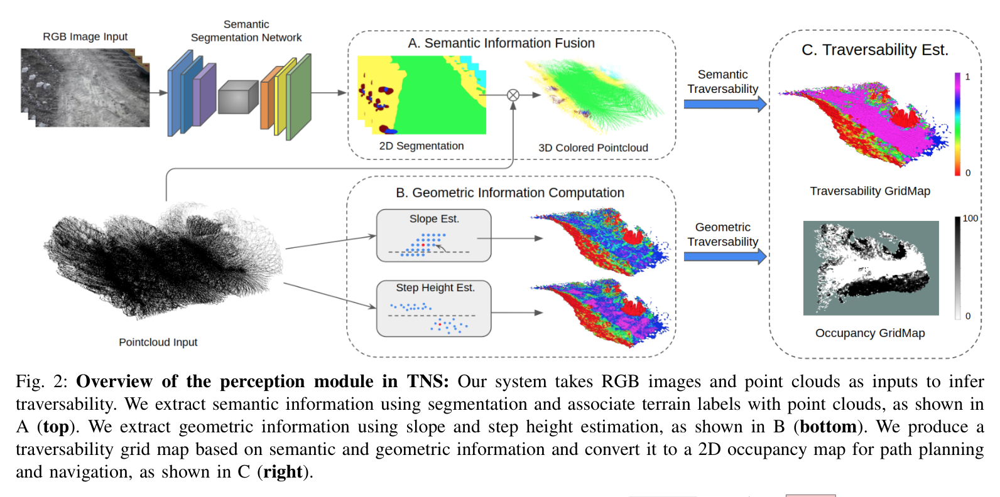
원문 Figure 2 · PDF p.3 — Fig. 2: Overview of the perception module in TNS: Our system takes RGB images and point clouds as inputs to infer traversability. We extract semantic information using segmentation and associate terrain labels with point clouds, as shown in A (top). We extract geometric information using slope and step height estimation, as shown in B (bottom). We produce a traversability grid map based on semantic and geometric information and convert it to a 2D occupancy map for path planning and navigation, as shown in C (right).
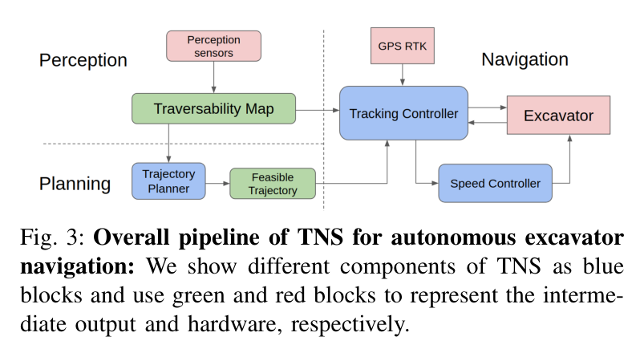
원문 Figure 3 · PDF p.3 — Fig. 3: Overall pipeline of TNS for autonomous excavator navigation: We show different components of TNS as blue blocks and use green and red blocks to represent the interme- diate output and hardware, respectively.
3.핵심 기술
장비 의존적 주행성 함수
TNS의 중요한 설계는 지형을 보편적인 traversable/non-traversable로 고정하지 않고 XE490D가 실제로 견딜 수 있는 범위로 점수화한 것이다. 0.6 m 궤도 폭과 0.2 m 격자 때문에 7×7 이웃은 약 1.4 m 범위를 보며, 한 셀의 돌출보다 궤도 접지 영역에서 나타나는 높이 변화를 반영한다.
경사와 단차는 안전값 이하에서 손실이 없고 임계값 이상에서 금지되며, 중간 구간은 연속 점수로 남는다. 따라서 계획기는 이분법적 장애물 지도보다 위험이 낮은 우회로를 비교할 수 있다.
격자 해상도 0.2 m와 궤도 폭 0.6 m를 함께 사용한다.
경사와 단차 가중치는 각각 0.5로 설정해 동등하게 반영한다.
안전 단차 0.10 m, 임계 단차 0.35 m를 실차 기준으로 사용한다.
의미가 물리 형상의 모호성을 해소하는 융합
물 표면은 평평한 점군으로 관측될 수 있고, 암석 더미의 일부는 완만한 경사로 보일 수 있다. TNS는 이런 경우 의미 분할의 금지 클래스가 기하 점수를 덮어쓰도록 해 형상만으로 생기는 위험한 낙관을 줄인다. 반대로 의미 경계가 흔들릴 때는 LiDAR의 경사와 단차가 물리적 근거를 보완한다.
rock, excavator, obstacle, water 클래스는 최종 점수를 0으로 만든다.
flat 클래스도 기하 점수가 0이면 통행 가능으로 복구하지 않는다.
전역 격자 누적은 순간 분할 오류보다 지속적인 공간 관측을 활용한다.
지도 점수를 직접 소비하는 Hybrid A*
수정 계획기는 충돌 여부만 검사하지 않고 primitive가 밟는 셀의 주행성에 따라 길이 비용을 바꾼다. 결과적으로 같은 거리의 후보라도 낮은 점수 영역을 길게 통과하는 경로는 더 비싸며, 미관측 영역 또한 별도 가중치로 다룬다. 지도 개선이 계획 성공률로 이어지는 구조적 연결점이다.
기존 Hybrid A*의 차량 운동학과 후진·회전 비용을 유지한다.
주행성 가중 이동 길이와 추가 비용을 누적한다.
경로 탐색 뒤 방향 오차와 횡오차를 이용해 궤도차량을 제어한다.
실시간성을 위한 비동기 처리 예산
의미 분할 평균 75.4 ms, 의미 투영 42.3 ms, 기하 계산 22.1 ms로 각 모듈을 구성하고 최종 융합은 2 ms 미만으로 유지했다. 입력 RGB는 25 Hz, 점군과 지도는 10 Hz이므로 모든 센서 프레임을 순차 처리하기보다 각 스트림의 주기에 맞춘 실시간 갱신이 중요하다.
RTX 2060 6 GB와 i7-10875H, 16 GB 메모리의 차량 탑재 컴퓨터에서 실행했다.
지도 갱신률 10 Hz를 달성했다.
최종 융합 연산은 전체 지연의 병목이 아니었다.
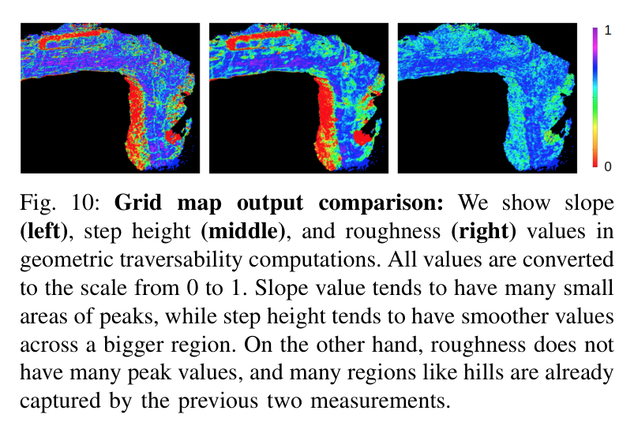
원문 Figure 10 · PDF p.10 — Fig. 10: Grid map output comparison: We show slope (left), step height (middle), and roughness (right) values in geometric traversability computations. All values are converted to the scale from 0 to 1. Slope value tends to have many small areas of peaks, while step height tends to have smoother values across a bigger region. On the other hand, roughness does not have many peak values, and many regions like hills are already captured by the previous two measurements.
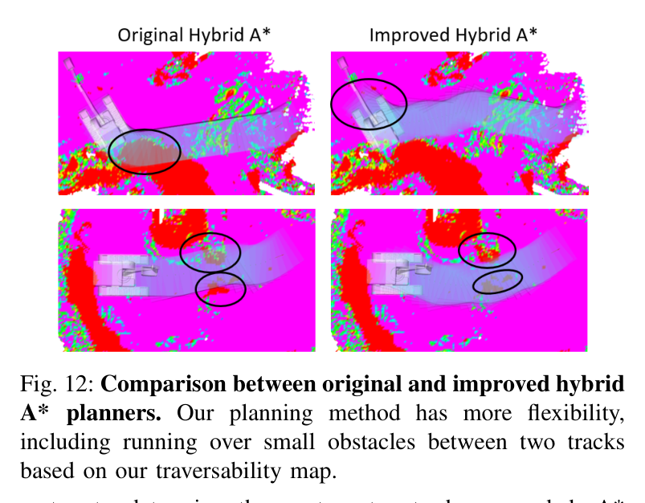
원문 Figure 12 · PDF p.11 — Fig. 12: Comparison between original and improved hybrid A* planners. Our planning method has more flexibility, including running over small obstacles between two tracks based on our traversability map.
차량 컴퓨터는 Intel i7-10875H, 16 GB RAM, NVIDIA RTX 2060 6 GB 구성이다.
CWT는 약 30분의 현장 영상에서 뽑은 1920×1080 RGB 669장과 7개 지형 클래스로 구성된다.
공개 RELLIS-3D를 사용해 다른 지형 주행성 추정법과 동일한 지도 품질 지표를 비교했다.
실차 계획 시험은 구덩이, 경사, 암석 더미가 섞인 두 곳 이상의 200 m² 이상 현장에서 90회 넘게 수행했다.
실험 프로토콜
RELLIS-3D의 의미·기하 입력으로 방법별 traversable/non-traversable 정확도, 평균 정확도, 전체 정확도, AUC, MSE를 산출했다.
동일 시작점과 목표점 조건에서 TNS 지도와 기하 전용 지도를 각각 Hybrid A*에 주고 경로 생성 성공 여부를 집계했다.
직선, 작은 회전, 급회전 궤적을 여러 차례 추종해 총 거리와 평균·최소 추종 오차를 기록했다.
대표 자율 주행은 약 0.5 m/s로 50 m를 102초 동안 이동하며 위치 오차를 연속 기록했다.
분할, 투영, 기하 지도, 최종 융합의 실행시간을 모듈별로 측정해 실시간 갱신 가능성을 확인했다.
비교 기준
기하 정보만 사용하는 terrain mapping과 TNS 의미·기하 융합 지도를 계획 성공률에서 비교했다.
RELLIS-3D 표의 semantic-only, geometry-only 및 기존 융합 계열 방법과 주행 가능 영역 판정을 비교했다.
경로 추종은 직선, 작은 회전, 급회전 난이도를 나누어 제어 성능 변화를 평가했다.
평가 지표
주행 가능/불가능 클래스 정확도, mean accuracy, aggregate accuracy, AUC, MSE
계획 성공률과 시험 횟수
총 주행 거리, 평균 추종 오차, 최소 추종 오차, 대표 주행 최대 오차
모듈별 평균 처리시간과 전역 지도 갱신 주파수
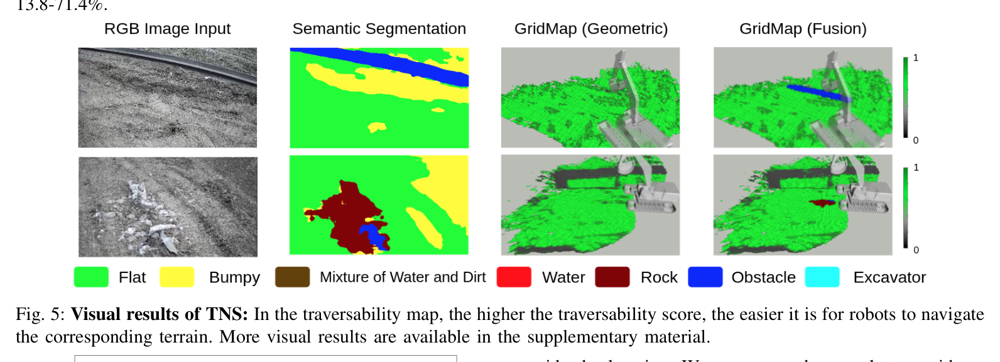
원문 Figure 5 · PDF p.7 — Fig. 5: Visual results of TNS: In the traversability map, the higher the traversability score, the easier it is for robots to navigate the corresponding terrain. More visual results are available in the supplementary material.
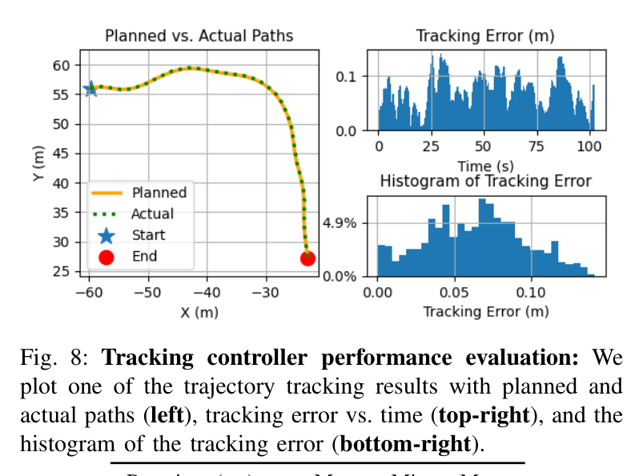
원문 Figure 8 · PDF p.8 — Fig. 8: Tracking controller performance evaluation: We plot one of the trajectory tracking results with planned and actual paths (left), tracking error vs. time (top-right), and the histogram of the tracking error (bottom-right).
핵심 결과 해석
RELLIS-3D에서 TNS는 traversable 정확도 71.77%, non-traversable 정확도 91.05%, 평균 정확도 81.41%, 전체 정확도 85.70%, AUC 0.803, MSE 0.106을 기록했다. 논문이 보고한 비교 범위에서 기존 방법 대비 지도 정확도는 4.17~30.48% 향상되고 MSE는 13.8~71.4% 감소했다. 특히 단순 분류 정확도뿐 아니라 연속 주행성 점수의 오차가 줄었다는 점이 비용 기반 계획과 연결된다.
90회가 넘는 현장 계획 시험에서 의미·기하 TNS 지도의 성공률은 82.6%, 기하 전용 지도는 33.3%였다. 49.3%포인트 차이는 물과 암석, 굴착기 같은 의미 위험을 비용지도에 넣는 효과를 보여준다. 대표 50 m 주행은 102초 동안 약 0.5 m/s로 진행됐고 최대 오차 14 cm, 대부분 구간 오차 약 6 cm를 보였다.
궤적별 집계에서도 급회전 8회 242.14 m의 평균 오차가 0.059 m였고, 직선 9회 158.85 m는 0.102 m, 작은 회전 8회 219.35 m는 0.104 m였다. 실시간 처리에서는 분할 75.4 ms, 투영 42.3 ms, 기하 22.1 ms, 최종 융합 2 ms 미만으로 10 Hz 전역 지도를 유지했다.
정량 결과
평가 항목
정량 결과
조건·맥락
원문 근거
RELLIS-3D 평균 정확도
81.41%
TNS의 traversable/non-traversable 평균 정확도
PDF p.6
RELLIS-3D 전체 정확도
85.70%
전체 격자 판정 aggregate accuracy
PDF p.6
RELLIS-3D 지도 MSE
0.106
연속 traversability score의 mean squared error
PDF p.6
현장 경로계획 성공률
82.6% 대 33.3%
90회 이상 시험에서 TNS와 기하 전용 지도의 비교
PDF p.12
대표 주행 최대 추종 오차
0.14 m
약 0.5 m/s, 50 m, 102초 자율 주행
PDF p.8
전역 지도 갱신률
10 Hz
RGB 25 Hz와 LiDAR 10 Hz 입력을 융합한 실차 실행
PDF p.8
실패 사례와 경계조건
굴착 작업 중 발생하는 짙은 먼지는 LiDAR 점군과 카메라 분할을 동시에 오염시켜 순간적인 지도 잡음을 만든다.
RTK는 수평 약 5 cm에 비해 고도 오차가 약 20 cm여서 높이 기반 지도 정합에 더 큰 불확실성을 준다.
균일한 토사 환경에서 시도한 SLAM은 반복적이고 희소한 특징 때문에 안정적인 전역 위치를 제공하지 못했다.
현 Hybrid A*는 안전한 경로를 찾더라도 곡률과 매끄러움을 항상 보장하지 않으며 궤도 사이 공간을 적극 활용하지 않는다.
사람과 다른 건설기계가 많이 섞인 환경, 다양한 기후·토질, 다른 크기의 굴착기에 대한 일반화는 충분히 검증되지 않았다.
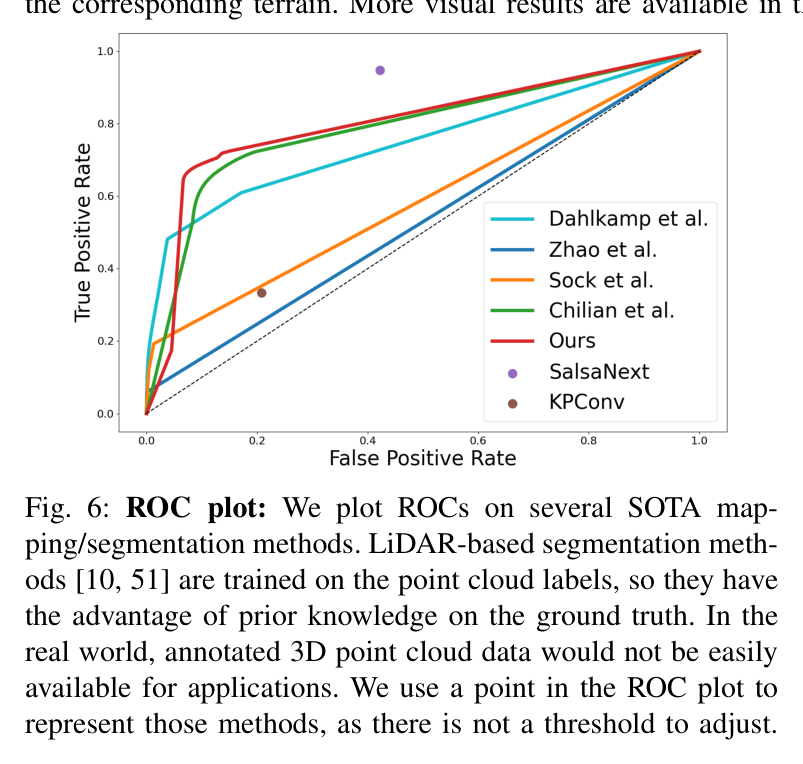
원문 Figure 6 · PDF p.7 — Fig. 6: ROC plot: We plot ROCs on several SOTA map- ping/segmentation methods. LiDAR-based segmentation meth- ods [10, 51] are trained on the point cloud labels, so they have the advantage of prior knowledge on the ground truth. In the real world, annotated 3D point cloud data would not be easily available for applications. We use a point in the ROC plot to represent those methods, as there is not a threshold to adjust.
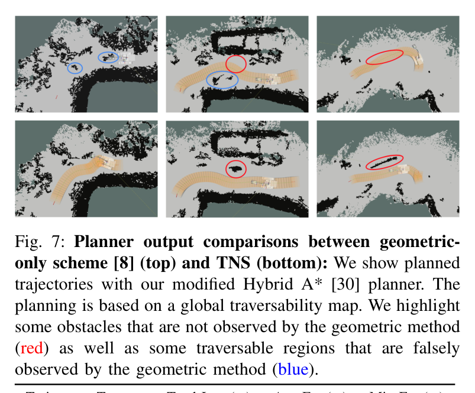
원문 Figure 7 · PDF p.8 — Fig. 7: Planner output comparisons between geometric- only scheme [8] (top) and TNS (bottom): We show planned trajectories with our modified Hybrid A* [30] planner. The planning is based on a global traversability map. We highlight some obstacles that are not observed by the geometric method (red) as well as some traversable regions that are falsely observed by the geometric method (blue).
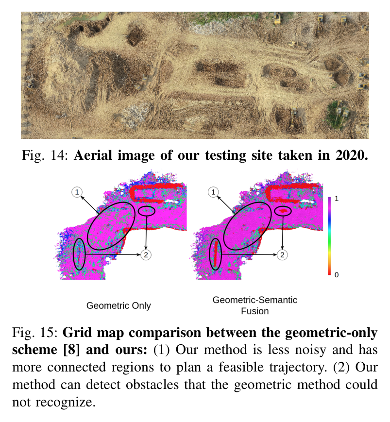
원문 Figure 15 · PDF p.12 — Fig. 15: Grid map comparison between the geometric-only scheme [8] and ours: (1) Our method is less noisy and has more connected regions to plan a feasible trajectory. (2) Our method can detect obstacles that the geometric method could not recognize.
5.한계 및 향후 연구
현재 한계
검증 플랫폼이 49톤 XE490D 한 기종에 집중되어 경량·중형 굴착기에 동일 임계값을 적용할 수 없다.
거칠기 특성은 점군 밀도와 먼지에 민감해 최종 시스템에서 경사·단차만큼 안정적으로 활용되지 못했다.
RTK 의존도가 높고 고도 오차가 커서 GNSS 음영이나 대형 구조물 주변에서는 전역 지도 정합이 약해질 수 있다.
안전 때문에 극단적인 경사와 깊은 구덩이의 반복 시험 수가 제한됐으며 사람·다중 장비 혼재 시나리오가 적다.
계획기는 궤도 사이의 빈 공간과 작업기의 기하를 정교하게 모델링하지 않고 경로 평활성을 보장하지 않는다.
향후 연구
차체 폭, 궤도 간격, 작업장치 돌출을 직접 고려하는 굴착기 전용 계획기를 개발해야 한다.
먼지와 악천후에 강한 센서 융합 및 GNSS 비가용 구간용 지역화 수단을 추가해야 한다.
여러 톤급 장비와 다양한 토질·광산·건설현장에서 장비별 임계값을 자동 보정할 필요가 있다.
사람과 다른 건설기계의 의도를 추정하는 동적 장애물 예측과 협업 안전 규칙을 통합해야 한다.
주행성뿐 아니라 곡률, 에너지, 지반 훼손, 전복 여유도를 함께 최적화하는 경로 비용이 필요하다.
6.한마디로 정리
핵심 방법은?
카메라 의미와 LiDAR 경사·단차를 굴착기 사양으로 정규화해 0.2 m 전역 격자에 융합하고, 그 점수를 Hybrid A*와 실차 제어가 직접 사용한다.
핵심 결과는?
RELLIS-3D MSE 0.106, 현장 계획 성공률 82.6%, 10 Hz 지도와 50 m 주행 최대 오차 14 cm로 인지부터 이동까지의 효과를 입증했다.
한계는?
단일 49톤 플랫폼, RTK·먼지 민감도, 제한된 혼재 환경, 궤도 구조와 경로 평활성을 충분히 다루지 않는 계획기가 실용 확장의 경계다.
자율 굴착에서 작업 계획은 굴착점만 잘 고르는 것으로 끝나지 않는다. 장비가 토사 더미와 덤프트럭 사이를 이동하거나 다음 작업 구역으로 기동하려면 지형의 의미와 차체 한계를 같은 좌표계에서 판단해야 한다. TNS는 굴착 전후로 계속 변하는 현장을 지도화하고 그 점수를 계획 비용으로 전달한다는 점에서 작업 자율화의 이동 기반층을 제공한다.
필드로봇 관점에서는 센서 정확도보다 최종 임무 성공률까지 평가한 구성이 중요하다. 의미 분할의 개선이 지도 MSE를 줄이고, 다시 계획 성공률과 추종 오차로 이어지는 연쇄를 보여주기 때문이다. 다만 실제 배치에는 먼지·GNSS 음영·동적 인력과 장비를 포함하는 회복 전략이 추가되어야 한다.
굴착·적재 작업 구역 사이의 안전한 차체 재배치 경로 생성에 직접 사용할 수 있다.
장비 사양 기반 임계값은 동일 지형도 톤급별로 다른 위험도를 갖는다는 필드로봇 설계 원칙을 보여준다.
지도 지표와 실제 계획 성공률을 함께 보고해 인지 모듈 개선의 임무 수준 가치를 평가하는 기준을 제시한다.
향후 굴착 작업으로 변형된 지형을 즉시 재관측하고 다음 작업 순서를 재계획하는 폐루프로 확장할 수 있다.
7.전체 그림·표
본문 핵심 위치에 배치하지 않은 원문 Figure와 Table을 원문 페이지 순서로 수록한다.
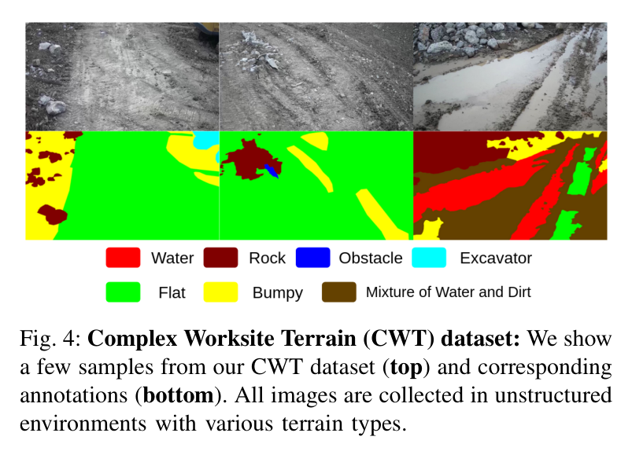
원문 Figure 4 · PDF p.5 — Fig. 4: Complex Worksite Terrain (CWT) dataset: We show a few samples from our CWT dataset (top) and corresponding annotations (bottom). All images are collected in unstructured environments with various terrain types.
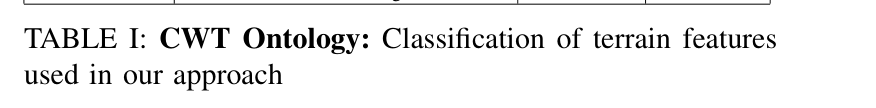
원문 Table I · PDF p.5 — TABLE I: CWT Ontology: Classification of terrain features used in our approach
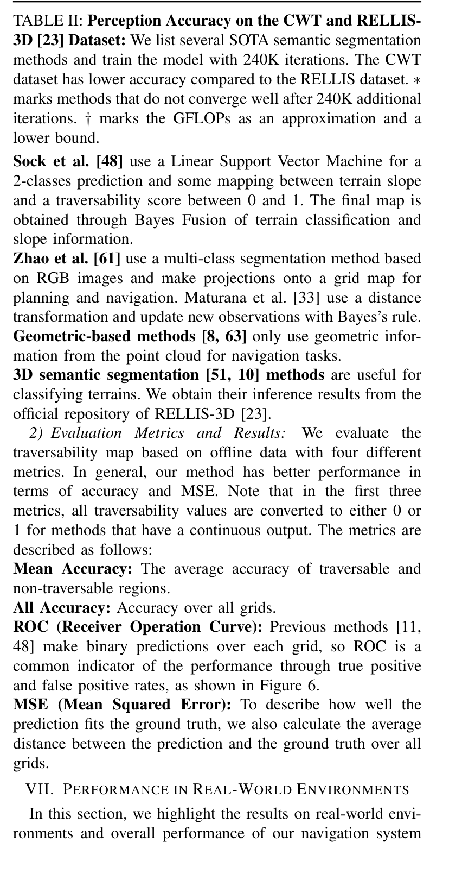
원문 Table II · PDF p.6 — TABLE II: Perception Accuracy on the CWT and RELLIS- 3D [23] Dataset: We list several SOTA semantic segmentation methods and train the model with 240K iterations. The CWT dataset has lower accuracy compared to the RELLIS dataset. ∗ marks methods that do not converge well after 240K additional iterations. † marks the GFLOPs as an approximation and a lower bound. Sock et al. [48] use a Linear Support Vector Machine for a 2-classes prediction and some mapping between terrain slope and a traversability score between 0 and 1. The final map is obtained through Bayes Fusion of terrain classification and slope information. Zhao et al. [61] use a multi-class segmentation method based on RGB images and make projections onto a grid map for planning and navigation. Maturana et al. [33] use a distance transformation and update new observations with Bayes’s rule. Geometric-based methods [8, 63] only use geometric infor- mation from the point cloud for navigation tasks. 3D semantic segmentation [51, 10] methods are useful for classifying terrains. We obtain their inference results from the official repository of RELLIS-3D [23]. 2) Evaluation Metrics and Results: We evaluate the traversability map based on offline data with four different metrics. In general, our method has better performance in terms of accuracy and MSE. Note that in the first three metrics, all traversability values are converted to either 0 or 1 for methods that have a continuous output. The metrics are described as follows: Mean Accuracy: The average accuracy of traversable and non-traversable regions. All Accuracy: Accuracy over all grids. ROC (Receiver Operation Curve): Previous methods [11, 48] make binary predictions over each grid, so ROC is a common indicator of the performance through true positive and false positive rates, as shown in Figure 6. MSE (Mean Squared Error): To describe how well the prediction fits the ground truth, we also calculate the average distance between the prediction and the ground truth over all grids.
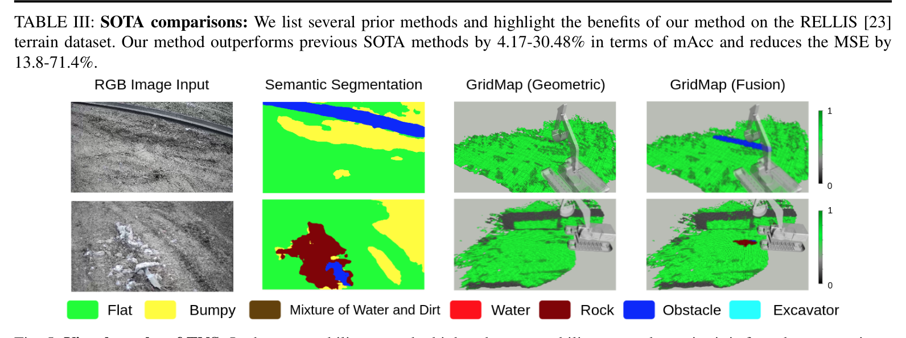
원문 Table III · PDF p.7 — TABLE III: SOTA comparisons: We list several prior methods and highlight the benefits of our method on the RELLIS [23] terrain dataset. Our method outperforms previous SOTA methods by 4.17-30.48% in terms of mAcc and reduces the MSE by 13.8-71.4%.
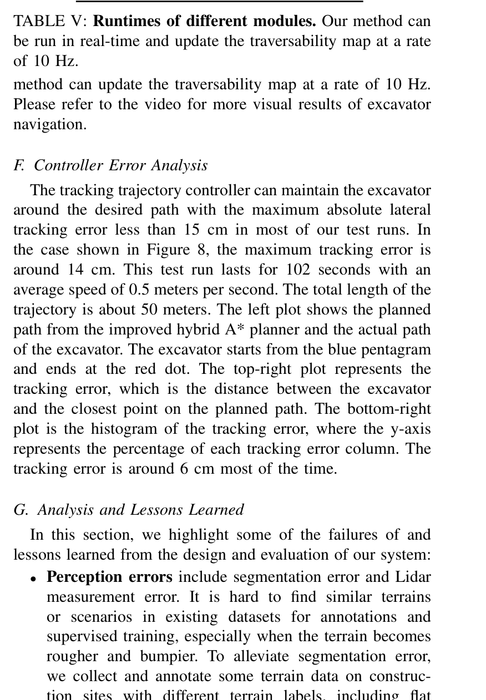
원문 Table V · PDF p.8 — TABLE V: Runtimes of different modules. Our method can be run in real-time and update the traversability map at a rate of 10 Hz. method can update the traversability map at a rate of 10 Hz. Please refer to the video for more visual results of excavator navigation.
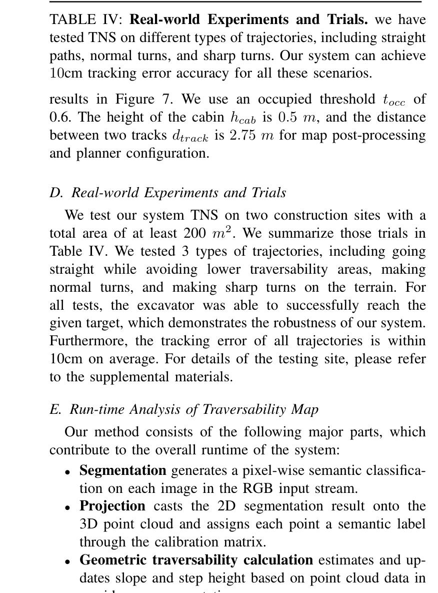
원문 Table IV · PDF p.8 — TABLE IV: Real-world Experiments and Trials. we have tested TNS on different types of trajectories, including straight paths, normal turns, and sharp turns. Our system can achieve 10cm tracking error accuracy for all these scenarios.
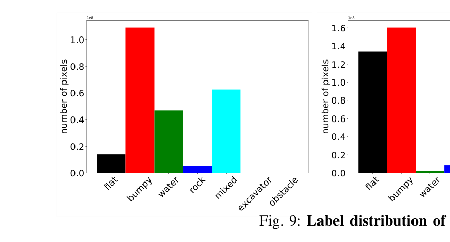
원문 Figure 9 · PDF p.10 — Fig. 9: Label distribution of each image sequence.
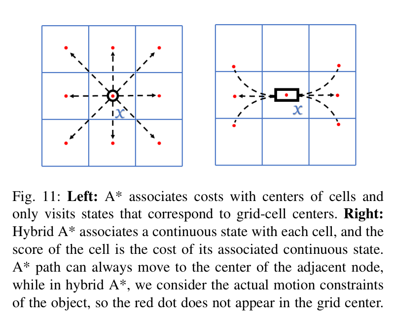
원문 Figure 11 · PDF p.10 — Fig. 11: Left: A* associates costs with centers of cells and only visits states that correspond to grid-cell centers. Right: Hybrid A* associates a continuous state with each cell, and the score of the cell is the cost of its associated continuous state. A* path can always move to the center of the adjacent node, while in hybrid A*, we consider the actual motion constraints of the object, so the red dot does not appear in the grid center.
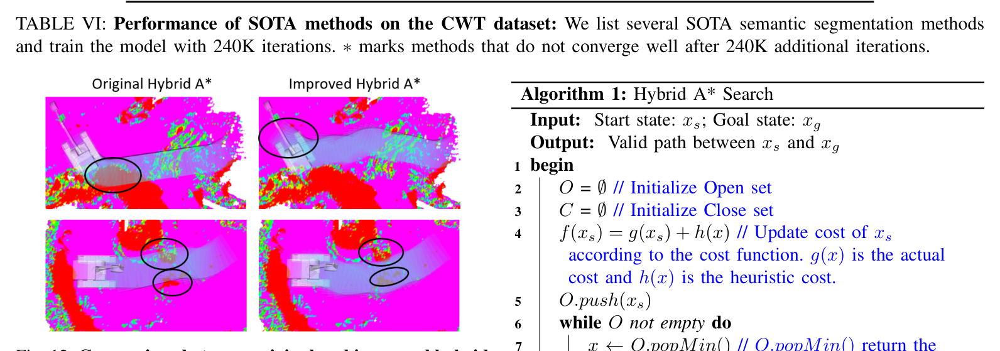
원문 Table VI · PDF p.11 — TABLE VI: Performance of SOTA methods on the CWT dataset: We list several SOTA semantic segmentation methods and train the model with 240K iterations. ∗marks methods that do not converge well after 240K additional iterations.
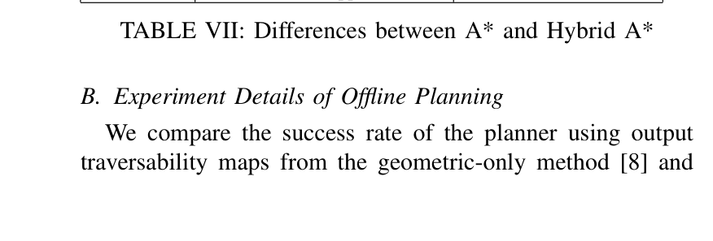
원문 Table VII · PDF p.11 — TABLE VII: Differences between A* and Hybrid A*
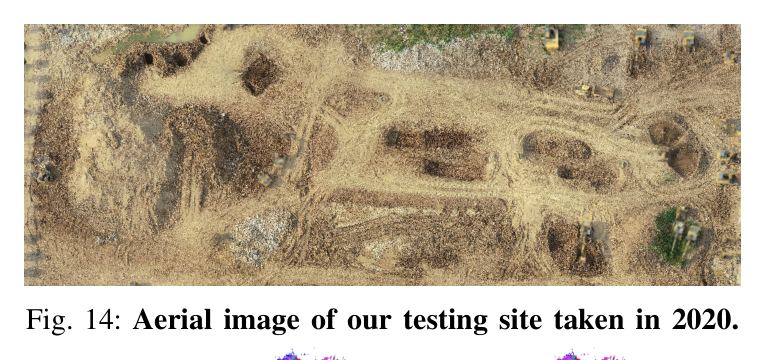
원문 Figure 14 · PDF p.12 — Fig. 14: Aerial image of our testing site taken in 2020.
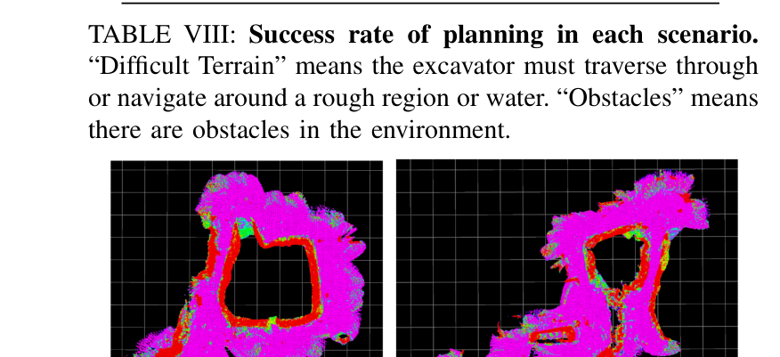
원문 Table VIII · PDF p.12 — TABLE VIII: Success rate of planning in each scenario. “Difficult Terrain” means the excavator must traverse through or navigate around a rough region or water. “Obstacles” means there are obstacles in the environment.
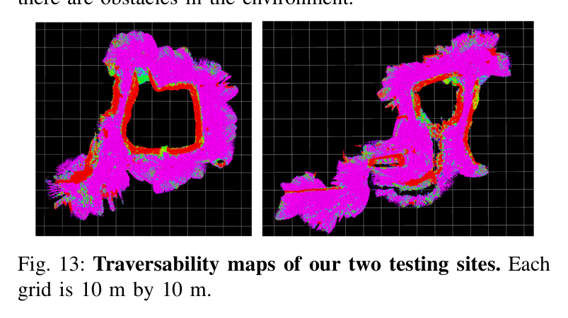
원문 Figure 13 · PDF p.12 — Fig. 13: Traversability maps of our two testing sites. Each grid is 10 m by 10 m.